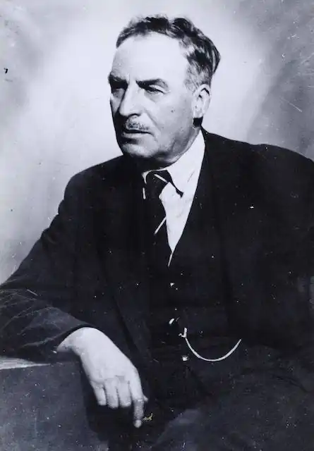
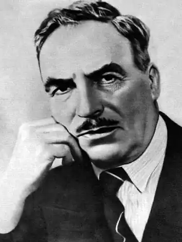

Елін Пелін — (справжнє ім'я Димитр Іванов Стоянов, народився 18 липня 1877, Байлово, Болгарія — помер 3 грудня 1949, Софія) — болгарський письменник, поет, і громадський діяч. Автор низки популярних творів для дітей, а також літературних верифікацій Євангелія. Місто Новоселці було перейменовано на честь Еліна Пеліна.
Першими псевдонимами були Чічо Благолаж, Камен Шипков, Елчо, Пан, Пелінаш, Поручик, Міто Йотов, Чер Чемер, Іван Коприван, Горна Гірчиця, Катерина, Бокіч.
Елин Пелин став зрештою основним псевдонимом. Він походить з рядка болгарської народної пісні. Пелин українською перекладається як полин. Значення Елина не відомо. Сам письменник вважав, що слово "Елин" застосовувався лише для рими у пісні. Походив з селянської родини, що споконвінчно мешкала у с.Байлово. Навчався спочатку у рідному селі. У 1890–1891 роках у гімназії в Софії, з 1891 до 1892 року — у Златиці, з 1892 до 1894 року — у Панагюриште. У 1894 році поступив до 1-ї Софійської чоловічої гімназії. У 1897 році намагався поступити до художнього училища, проте невдало. Закінчив навчання у 1897–1898 роках у Слівені. Після цього у 1898–1899 роках був вчителем у рідному селі. З 1898 року взяв собі псевдоним "Елин Пелин". З 1899 року брав участь як актор у софійській аматорській трупі "Сльози та сміх". У 1903 році призначається вчителем до 3-ї софійської народної гімназії. Того ж року отримав призначення до бібліотеки Софійського університету. У 1904 році відвідав Белград та Загреб. У 1905 році разом з другом-художником Олександром Божиновим здійснив подорож до Італії, побував у Флоренції, Венеції, Фіуме (сучасна Рієка). У 1906 році він Міністерства освіти був командирован до Франції, де відвідав нансі та Париж. Тут був до березня 1907 року. В цей час пише єдину свою драму "Раб рала". Втім за деякими вона була не зовсім вдалою. Тому Елин Пелин знищив цю драму, не збереглася навіть у рукописі. По поверненю став працювати у Народній бібліотеці. У 1913 році відвідав Рсоійську імперію. У 1914 році отримав премію "Іван Вазов" від історико-філологічного факультета Софійського університету. Багато займався літературою для дітей, брав участь у редагуванні дитячого журнала "Веселушка" (1908–1910) і "Галка" (1913–1914). З 1926 до 1944 року був обіймав посаду куратора будинку-музея "Іван Вазов" у Софії. У 1940 році став членом Болгарської академії наук. Того ж року обирається головою Спілки болгарських письменників, яку очолював до 1941 року. З 1945 року редагував газету болгарських піонерів "Септемврійче". Його розповіді відносяться до вищих досягнень болгарської реалистичної літератури, вони стали школою майстерності для багатьох болгарських прозаїків. З 1891 ркоу став писати вірші та оповідання. Друкуватися почав в 1895 році. У віршах ("Горобець", "О, тремтіння!", "Тиха журба", "Вони сплять", "Привіт", "Зима") і оповіданнях ("Незжата смуга", "Злочин", "Божевільна", "Напасть божого", "Брати", "На тому світі"), присвячених життю болгарського селянства, що було опубліковано у журналі "Сільська бесіда" (1902–1903 роки), піддано критиці буржуазні відносин. Тут помітний позначилося вплив социалистичних ідей. Широку популярність отримали збірки оповідань 1904 і 1911 років — "Літній день" і "Гнізда лелек". У двох повістях — "Геракови" (1911) і "Земля" (1922) зобразив зародження і розвиток капіталізму, що призводять до розпаду патріархальних відносин на селі, до загострення соціальної боротьби. Після Першої світової війни віршами у прозі "Чорні троянди" (1928 рік), оповіданням "Під монастирською лозою" (1936 рік) і сатирами "Я, Ти, Він" (1936 рік) відстоював ідеї гуманізму. Для дітей Елином Пеліном написані оповідання, романи "Ян Бібіян" (1933 рік) і "Ян Бібіян на Місяці" (1933–1934 роки).